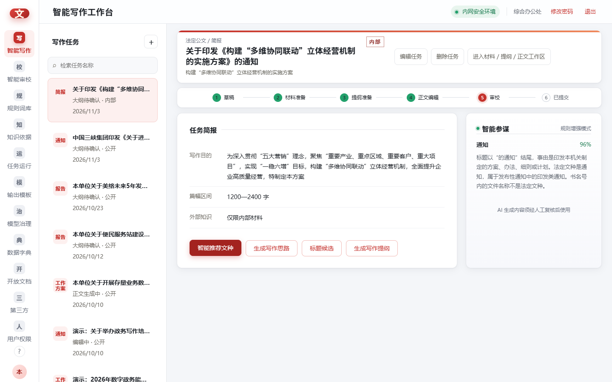
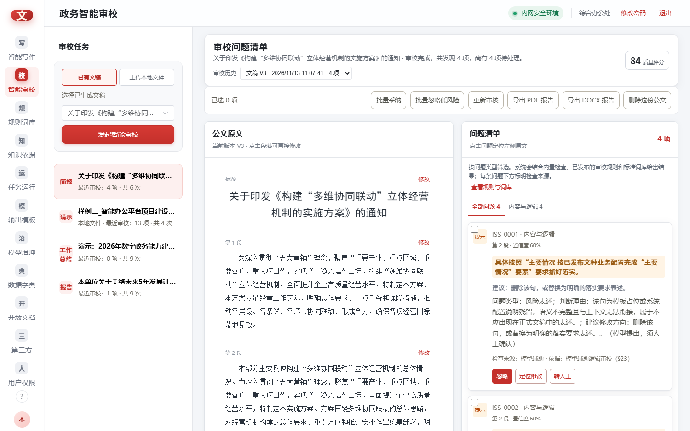
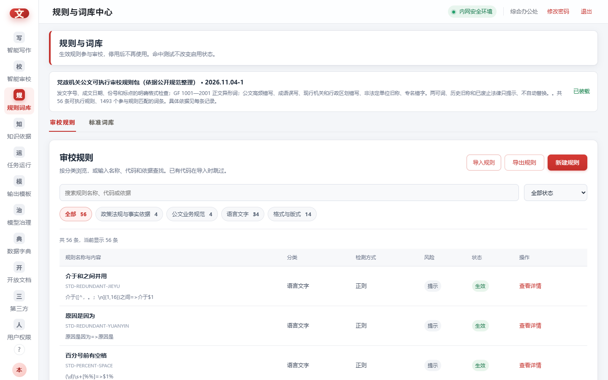
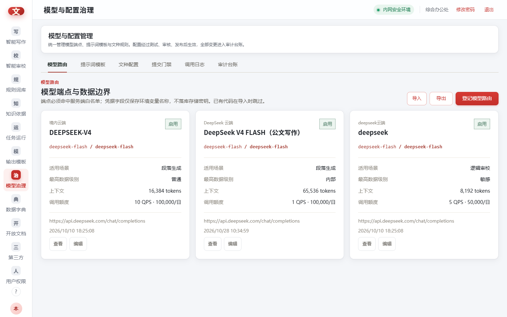
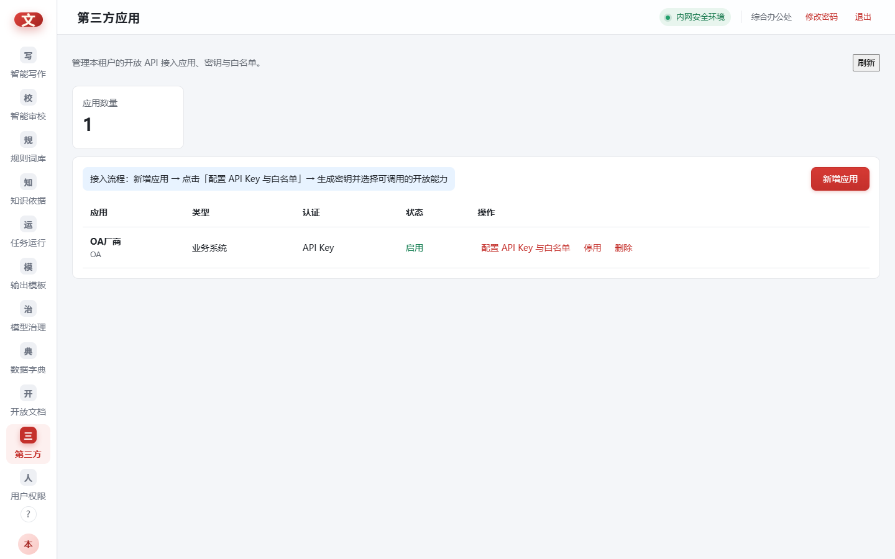

把材料、提纲、正文、审校和套红放在同一条工作链上。生成内容保留来源，审校问题回到原文，配置由管理员治理。
政文智枢是面向机关公文处理的写作与审校平台。起草人员在平台内完成任务、材料、提纲和正文；核稿人员对着原文处理审校问题；管理员维护规则、词库、知识、模板、模型和接入应用。
平台可以单独使用，也可以由 OA 等业务系统通过开放接口调用写作辅助和审校。开放接口上的摘要、润色、扩写和正文审校直接提交正文，平台不保存这些文稿。
| 角色 | 主要工作 |
|---|---|
| 起草人员 | 创建写作任务，准备材料，确认提纲，生成并修改正文，发起审校和套红。 |
| 核稿人员 | 查看审校问题，在原文中定位、修改、忽略或转人工，并重新审校。 |
| 管理员 | 维护规则、词库、知识库、输出模板、模型路由、用户权限和第三方应用。 |
登录后左侧为固定导航：智能写作、智能审校、规则词库、知识依据、任务运行、输出模板、模型治理、数据字典、开放文档、第三方、用户权限。右上角显示所在单位和「内网安全环境」。

一篇平台内公文按「草稿、材料准备、提纲准备、正文编辑、审校、已提交」推进。进度条只反映任务状态，不代替核稿结论。
创建任务时填写任务名称、文种、密级、写作主题、写作目的和篇幅。任务上保存的文种是创建或编辑时选定的，智能参谋不会自动改掉它。
文种推荐按《党政机关公文处理工作条例》执行，不靠写作目的里的零散词默认文种：
正文工作区分为通篇材料、本节材料、写作提纲和正文纸面。通篇材料供各章节使用，本节材料只供当前章节使用。材料可从上传、知识库或 OA 加入。固化材料权限快照后，生成使用的是当时的权限范围。
提纲按文种配置给出章节。确认提纲后，才按当前章节和已选材料生成本节。正文段落标出 AI 生成、待核实和可编辑。导出时可附 AI 辅助说明。
审校可以从已生成文稿发起，也可以上传本地 DOCX。页面左侧是原文，右侧是问题清单。点一条问题，回到对应段落。处理动作包括忽略、修改完成和转人工。修改后应重新审校。报告可导出 PDF 或 DOCX。
页面上的页眉评分是这次审校的汇总展示，不是准确率。标成「模型提出，须人工确认」的条目，只是待核对建议。

审校规则只有生效和停用。生效规则参与审校，停用后不再使用。命中测试不改变启用状态。导入时，已有规则代码跳过，不覆盖单位已经改过的规则。
当前内置的是「党政机关公文可执行审校规则包」。界面显示 56 条可执行规则，以及参与匹配的词条。两可词、历史旧称和已废止法律只提示，不自动替换。

知识库按权限、用途、完整性和核验状态管理。检索和查看切片只供阅读。选用到写作任务并选定章节后，才作为本节依据。原文摘录仍要在插入前确认，引用由人工核对。
公开资料保留来源和本地正文。页面能打开，不表示该文件仍然现行。政策效力、机构职务和历史名称需要按版本核验。

输出模板是 DOCX。上传后为生效，停用后不再选用。模板用占位符对应发文机关、字号、签发人、标题、主送、正文、成文日期、抄送和印发信息。模拟填充不改变生效或停用状态。
正文和套红后的定稿稿是两份结果。正文改过之后，需要重新套红。正式发出前，应在目标办公软件里复核下载的 DOCX。在线预览字体取决于部署环境是否安装并获得字体授权。

模型治理登记端点、适用场景、最高数据级别和调用额度。凭据字段只保存环境变量名，不保存密钥。调用日志不保存可还原的正文。

第三方应用使用应用编码和 API Key 调用开放接口。管理员配置密钥和能力白名单。未加入白名单不能调用。密钥只在生成时显示一次。

开放文档说明请求头 X-Open-App-Code、X-Open-Api-Key，以及创建写作或提交审校正文时需要的 Idempotency-Key。
平台按 Java 17 和 Vue 3 组织，可在单机 Linux 上使用已有 PostgreSQL 部署。规则、词库和已保存的知识正文可以在本地运行。需要模型生成时，模型服务必须能从部署网络访问。
试点时应先选定文种和样本，核验规则来源与模板版式，再接入身份认证和 OA。